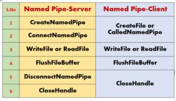
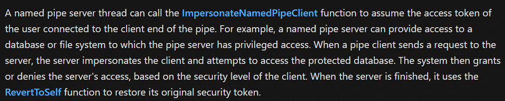
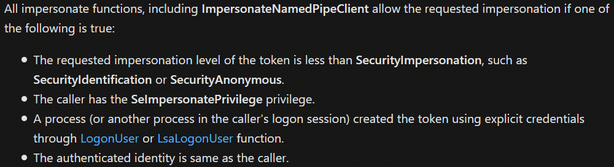
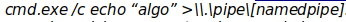
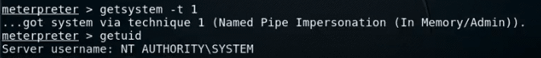
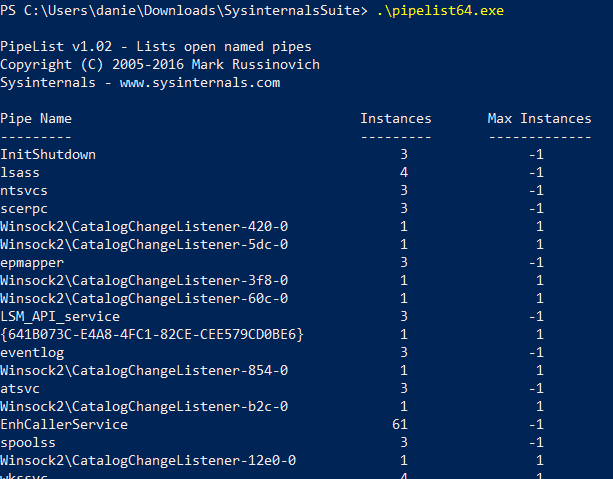
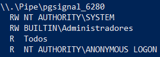
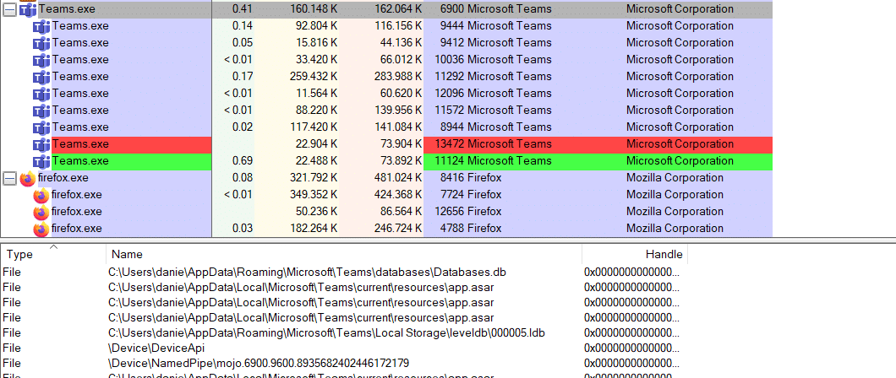
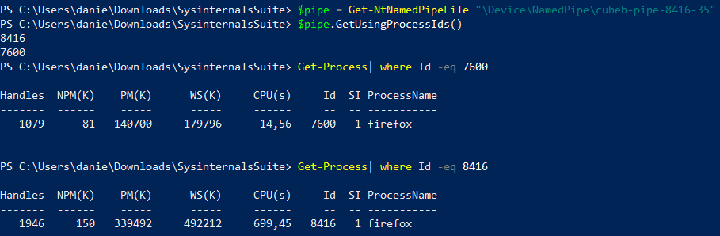

Buenas a todos. En este artículo veremos qué son las named pipes y sus posibles usos.
¿Qué es una Named Pipe?
Una named pipe es un canal de comunicaciones half-duplex o full-duplex entre un servidor pipe y uno o más clientes. Todas las instancias de una named pipe comparten el mismo nombre, pero cada instancia tiene sus propios búfers y handles y tienen conductos separados para la comunicación cliente-servidor.
Se usa para IPC (Inter-Process Communication), es decir para comunicación entre procesos. Existen 2 tipos de pipes: las anónimas y las named (con nombre); éstas son las más útiles a nivel de ciberseguridad.
Todo lo relativo a las named pipes se maneja usando la API Win32 de Windows con funciones como: CreateFile, CreateNamedPipe, CallNamedPipe, ReadFile, WriteFile, ConnectNamedPipe.

¿Qué podemos hacer con las Named Pipes?
En la documentación de Microsoft existe una feature de las named pipes que permite al hilo del servidor de la named pipe asumir el access token del cliente que se conecta a la named pipe. Si se cumple una de estas condiciones:
- que el token haya sido creado por un logon interactivo, o
- si se tiene el
SeImpersonatePrivilegeen el access token del servidor de la named pipe,
entonces se puede usar ImpersonateNamedPipeClient().

Abuso con Meterpreter
Hay muchas formas de abusar de una named pipe. Quizás la más conocida sea la que usa Meterpreter. Cuando usamos getsystem -t 1, lo que estamos haciendo es crear una named pipe (el usuario que la crea debe tener el SeImpersonatePrivilege). También crea un servicio que ejecuta cmd.
Cuando el proceso cmd que crea el servicio se conecta a la named pipe creada por Meterpreter, Meterpreter pasa a ejecutarse con el access token de SYSTEM.

Enumeración de Named Pipes
Para otro tipo de fallos en los que la named pipe está creada, primero necesitamos enumerarlas. Se puede hacer bien con pipelist de SysInternals o con el siguiente cmdlet en PowerShell:
((Get-ChildItem \\.\pipe\).name)
Para ver si podemos conectarnos a una named pipe con los privilegios que tenemos, solo tenemos que usar accesschk para ver su DACL o un cmdlet de NtObjectManager.

En Process Explorer usando Ctrl+H podemos ver los handles (y por extensión los named pipes) que usa cada proceso. En la foto de abajo podemos ver como Teams tiene una named pipe llamada mojo.

Si no tenemos claro qué procesos están usando la named pipe que nos interesa, podemos usar los siguientes cmdlets de PowerShell (del módulo NtObjectManager):



Conclusión
Evidentemente, cada binario que cree una named pipe se comportará de forma distinta dependiendo de cómo haya sido programado. Para analizar y debuggear el código de esos binarios, herramientas como dnSpy o IDA Pro son muy útiles.
En general, las named pipes son una superficie de ataque no muy explorada, pero que puede llevar a fallos muy interesantes. Espero que os haya gustado el post.
Referencias: